A mapping set belongs to a dataflow. There can be one dataflow per mapping set. The mapping set also uses one Dataset. A mapping set contains one or more mappings between DSD components (dimension, attributes, measures etc.) and Data Columns. The screen below supports import mapping set or export mapping set to json format. Additionally, a mapping set can also be removed using remove button.
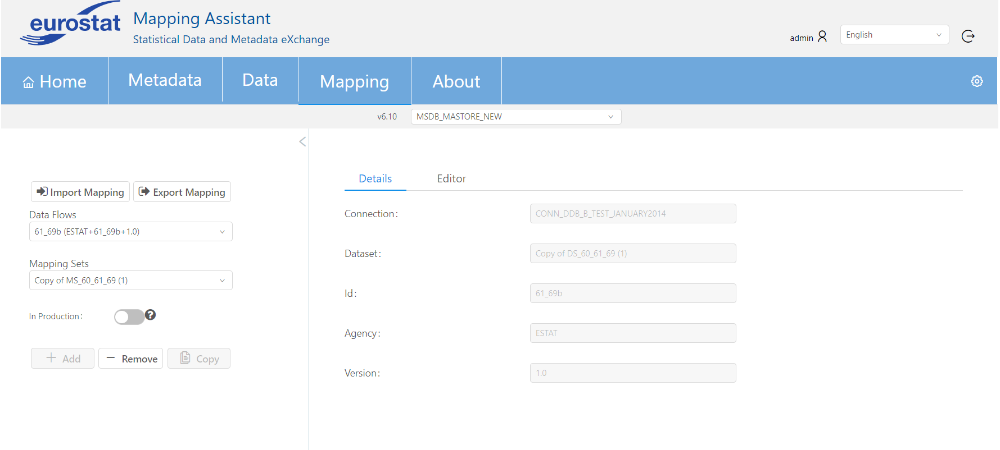
Various mappings can be seen by pressing on Editor tab.
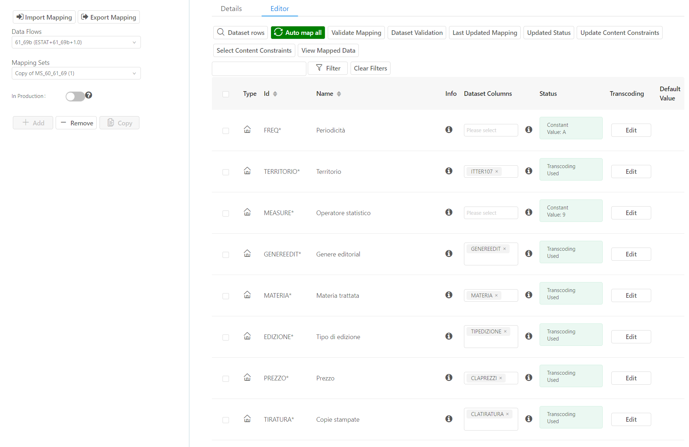
To add a mapping set, use Add button. The options you need to fill are:
| Option | Description |
|---|---|
| Name | The Mapping set name. |
| Connection | The Dissemination Database. |
| Dataset | The Dataset. |
Id, Agency and Version fields are prefilled from the selected Dataflow. Please see below:
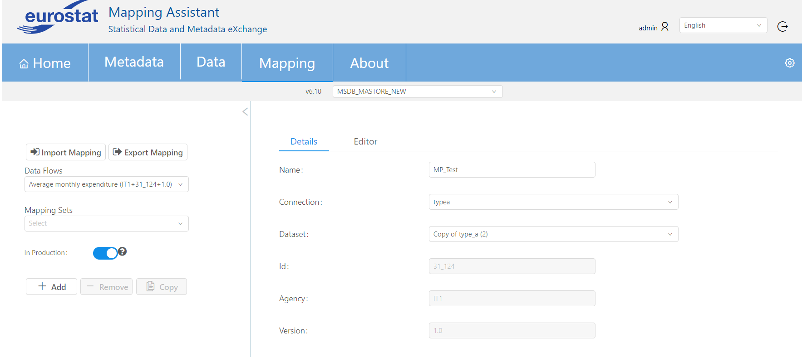
Next, the user should navigate to Editor tab, scroll down and press save button to save the mappings. Auto map all button can optionally be used, before save. After a successful save, a notification of success will appear and the new mapping set will be set on Mapping sets dropdown on the left sidebar (see below).
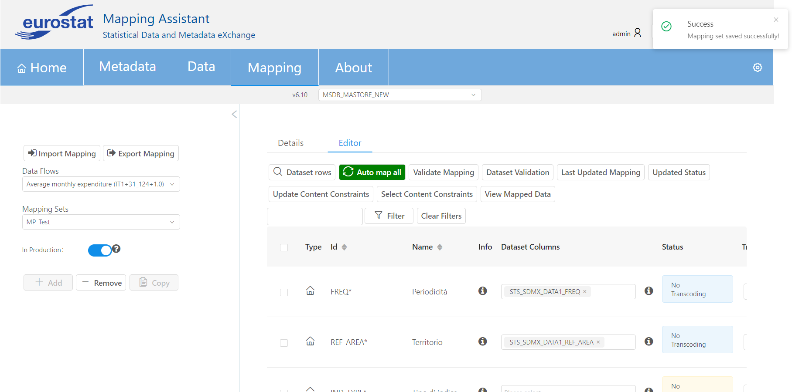
Below there is a description of the functionality for each button that appears on Mapping Set Editor.
| Button | Description |
|---|---|
| Dataset Rows | Shows the values from the corresponding dataset columns when the user created the Dataset. You can read more details in Dataset Rows subsection. |
| Auto map all | Automatically maps each component id to a possible value of Dataset column. |
| Validate Mapping | Checks if all mandatory dimensions are mapped. |
| Dataset Validation | Check if the mapped dataset columns have SDMX compliant values, transcodings are ignored. |
| Last Updated Mapping | Is an optional special mapping that a mapping set can have. |
| Updated Status | Is an optional special mapping that a mapping set can have. |
| Update Content Constraints | Creates content constraints based on mapping set's saved transcodings. |
| Select Content Constraints | If any constraints are created, they can be selected using the "Select Content Constraints". |
| View Mapped Data | Opens a modal with a variety of options, e.g., Format Validation, Data Validation etc. You can read more details in View Mapped Data subsection. |
When pressing Dataset Rows button, a modal appears showing a sql query. By pressing View Results button, one can see the values of the corresponding dataset columns in a Table form as below:
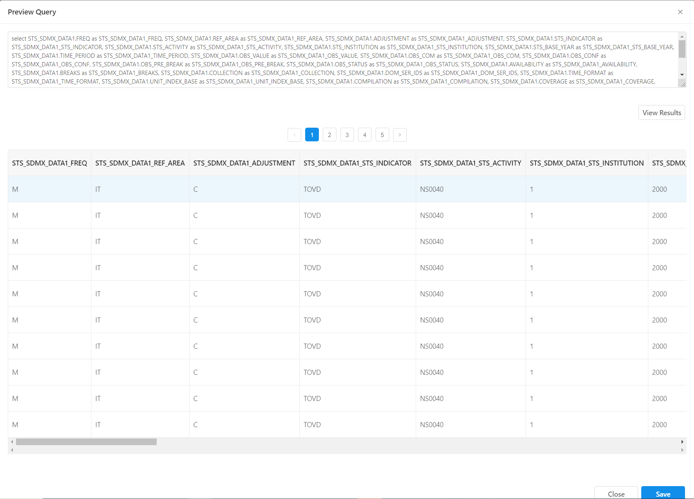
View Mapped Data modal is depicted below.
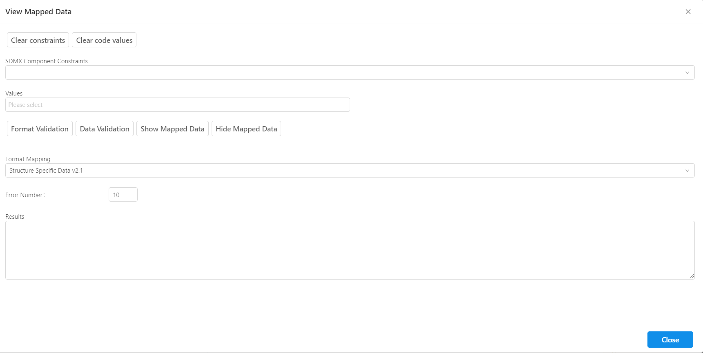
Here is an explanation for each button appeared in the screen.
| Button | Description |
|---|---|
| Clear constraints | Clears SDMX Component Constraints dropdown selected value. |
| Clear code values | Clears the selected values of the combobox with label Values. |
| Format Validation | Generates a data file and sends it to STRUVAL WS for checking if the the generated is correct and valid, transcodings taken into account. If STRUVAL WS is not configured, this button is disabled. How to configure STRUVAL WS is described in detail on Installation guide of MAWS.JAVA & MAWS.NET respectively. |
| Data Validation | Checks if the mappings produce SDMX compliant values, transcodings taken into account. |
| Show Mapped Data | Displays a Table which depicts the mapped data in SDMX format. |
| Hide Mapped Data | Hides table shown by pressing the Show Mapped Data button. |
Format Mapping dropdown, represents the format that the generated data file (produced by Format Validation button) will have before send it to STRUVAL WS.
Clear constraints and Clear code values buttons are used for filtering of the Table derived by pressing Show Mapped Data button.
An example with the resulting Table from pressing Show Mapped Data and apply filtering follows (note the dataflow that is used for this example is different with the one used for Mapping Sets Screen to add a mapping set) :
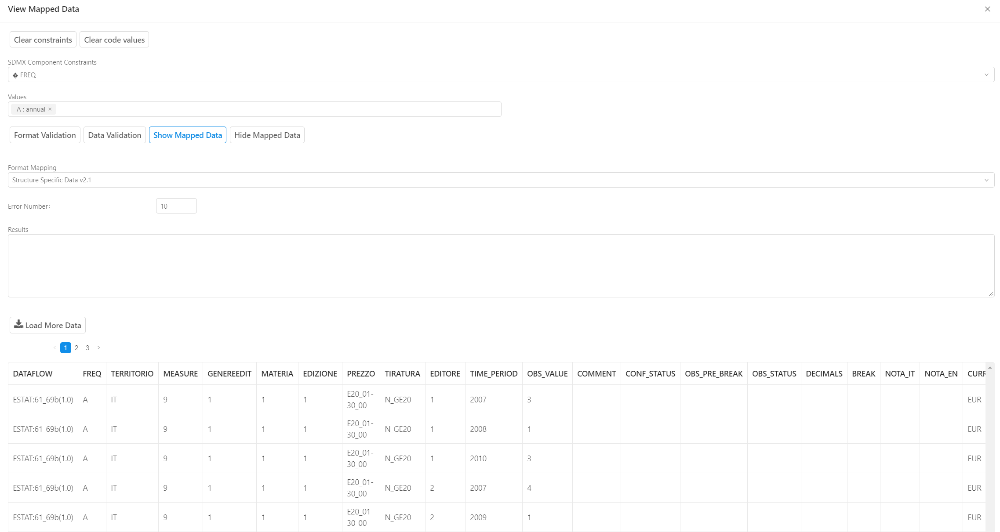
Through Mapping Set editor the user can add/edit a transcoding for a mapping by using Add/Edit button of column Transcoding.
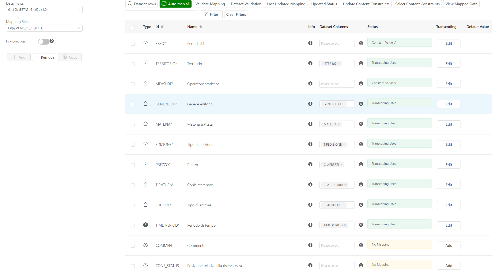
Status column, as shown in the previous screenshot, can have the following values:
Below there is another example for Status column:
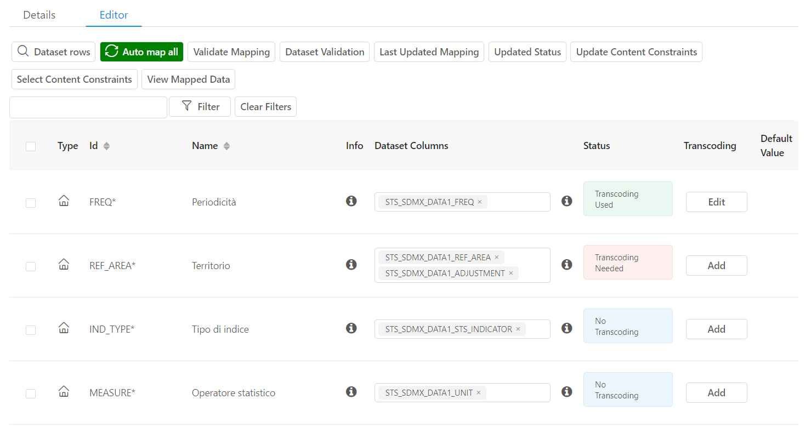
When user presses the add or edit button a modal (see below) appears:
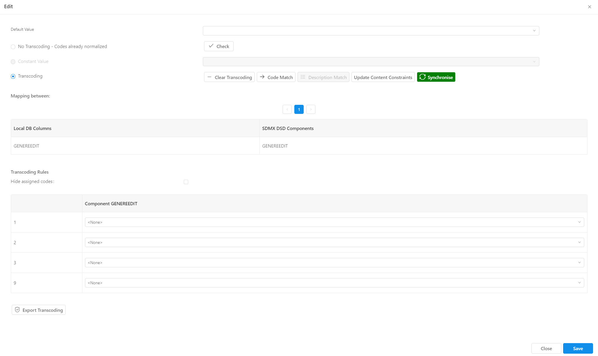
User can select No Transcoding or a Constant value or Transcoding. No transcoding means that no transcoding will be applied. A dimension can be mapped to a constant value only when it is not already mapped to a dataset column. In that case, the constant value can be entered in the form of either text or a selection from a dropdown of pre-defined values. The free text form appears in the following cases:
By selecting radio button Transcoding one can apply a transcoding for this mapping and save it. The items below describe the available functionalities.
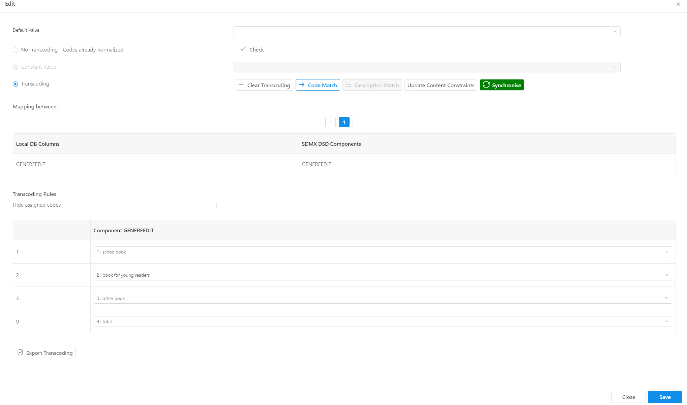
Update Content Constraints button creates content constraints based on mapping set's saved transcodings.
Export Transcoding button downloads all the transcoding rules in .csv format.
We present an example for adding Time Transcoding. Note the frequency values (FREQ component id in our example) should be matched to the values of time transcoding of TIME_PERIOD component. For instance, if FREQ value is only A (i.e. Annual), the time transcoding on TIME_PERIOD should use A option (i.e. Yearly). This happens only on Time Transcoding and not on Advanced Time Transcoding. To apply time transcoding, we press Add button for TIME_PERIOD (highlighted)
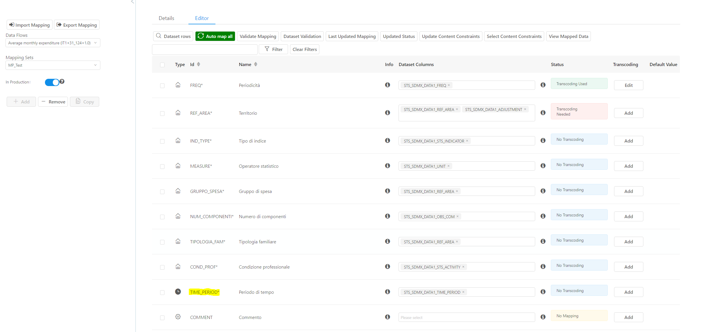
and the following modal appears:
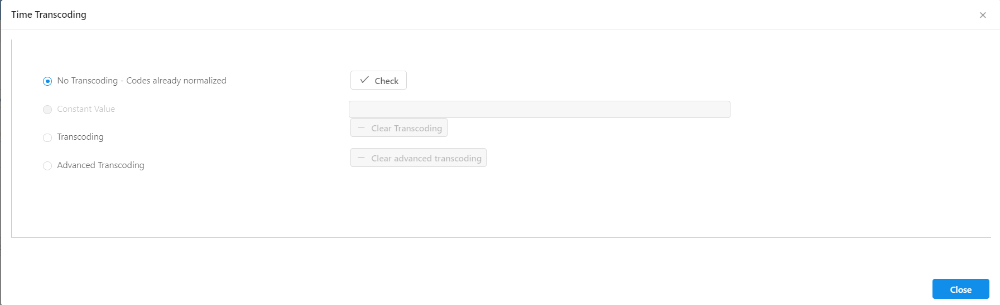
We choose Transcoding radio button and the modal shows the following details:
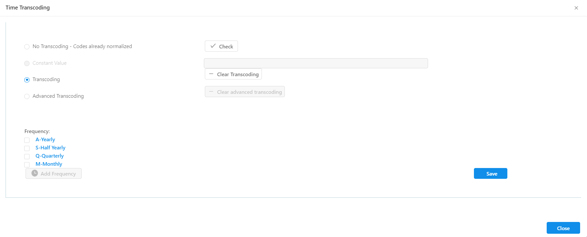
From Frequency checkbox, we select value Q-Quarterly (the selection is based on the values of FREQ component id).
If the checkbox is the local colum data type date/time or timestamp is checked, then, the sliders, the table with the codes, the Year Column dropdown
and the Period Column dropdown are disappeared and only Date Column dropdown is enabled for selection. If we choose another value for Frequency, the screen will adjust accordingly.
To fill in the details we follow a few steps:
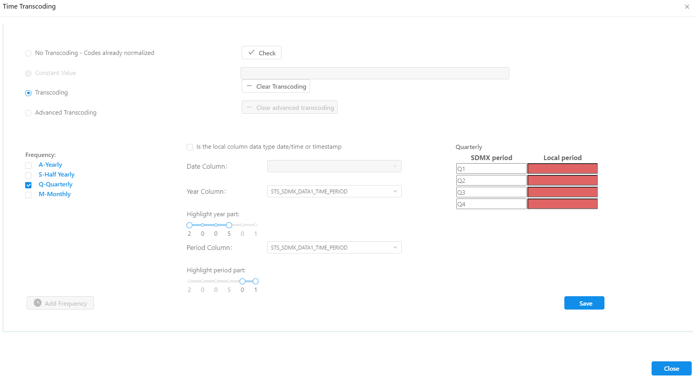
Based on Highlight period part selection, local codes for period validation are created under the hood. Practically, the local codes for period validation will be a substring (period part selection) of the local codes of the dataset. All values of Local period (red column of he table) will be validated. As soon a value is correct, the background color of the cell will become white. Observe the screenshot below:
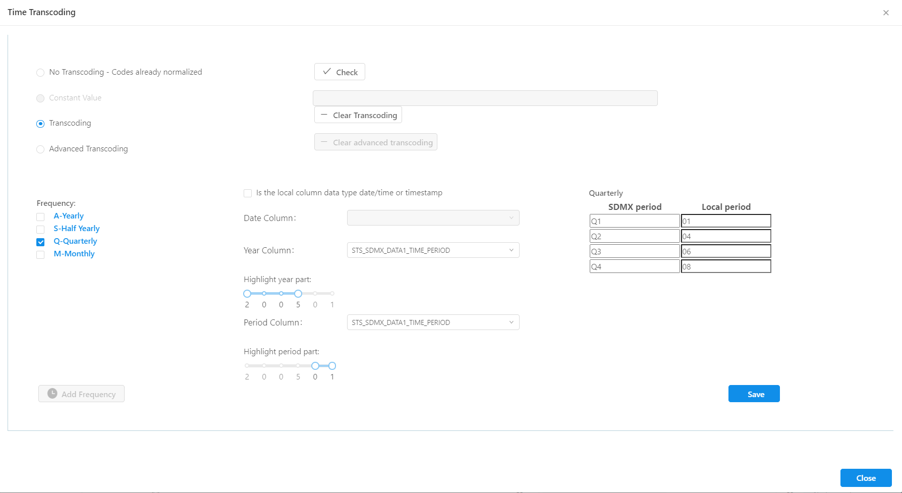
After all details are filled, user can save the transcoding. To delete an existing transcoding Clear Transcoding button should be used.
Advanced time transcoding to be enabled, needs at least two columns to be mapped. One for selecting the criteria/output format and others containing the actual time period.
To add Advanced Time Transcoding, Advanced Trascoding radio button should be selected. If there is am existing advanced time transcoding, then this radio button will be automatically selected.
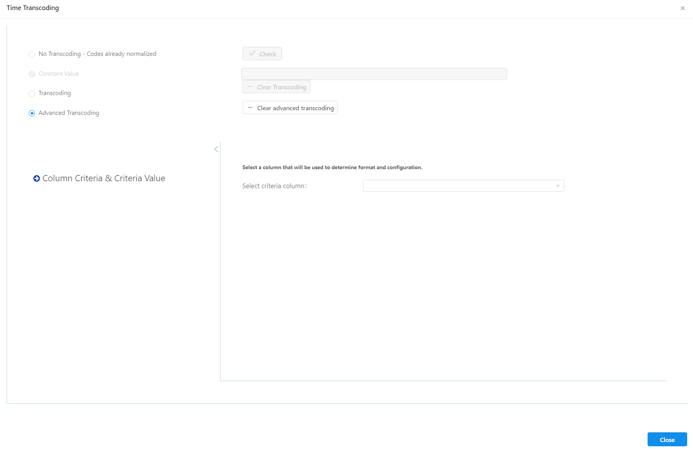
We will demonstrate below the most complex case to add Advanced time transcoding. Web app is quite intuitive for the rest cases. User should follow the steps below:
Select criteria column dropdown and a Select criteria value dropdown will appear.
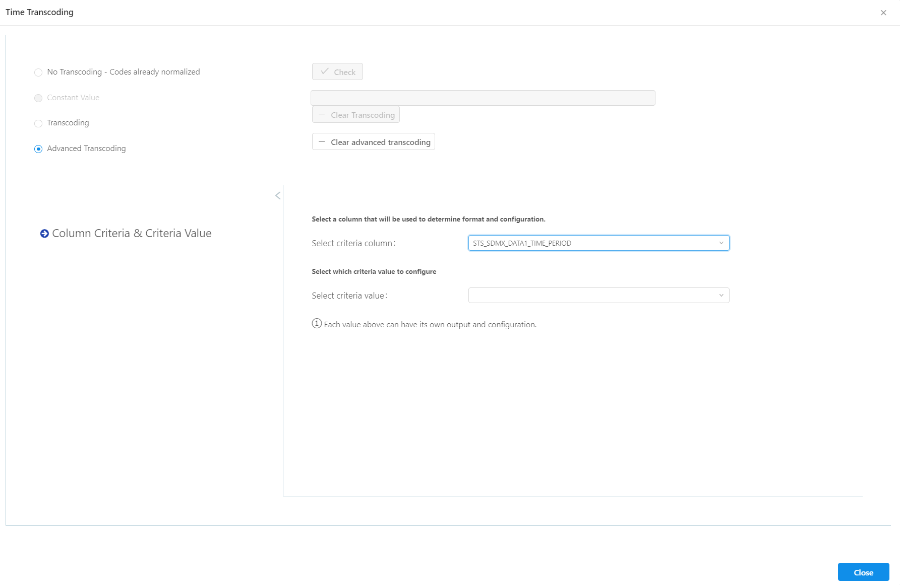
Choose a criteria value from the dropdown. The blue colored values means that these criteria values have already performed advanced time transcoding. Hence, if the user selects a blue colored option, the saved Advanced time transcoding values will be loaded and the appropriate radio buttons will be selected.
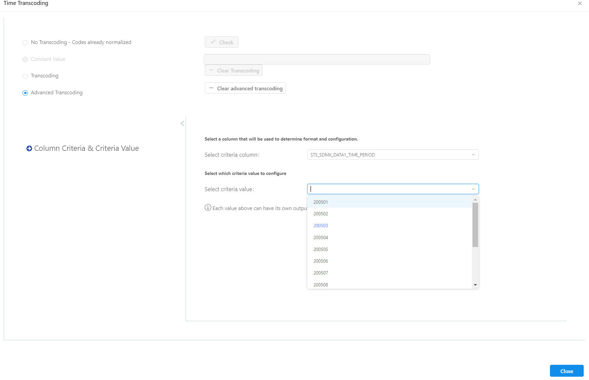
When selected a criteria value, a Table with the Output types appears. Depending on the choice of the radio button, the user will see the approriate options. Note each criteria value can have its own advanced time transcoding. Moreover, if there is an existing advanced time transcoding for a specific criteria column and the user changes the criteria column to another value, and do the procedure to save an advanced time transcoding, then the other one (with the different criteria column selection) will be deleted.
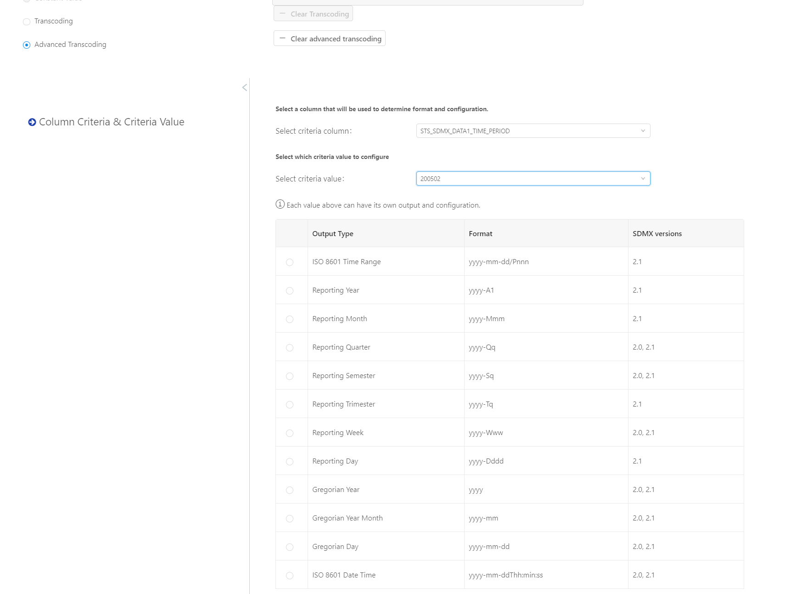
Choose ISO 8601 Time Range option and a new tab on the left with name Time Range will appear.
Additionally, a new selection of how the time range is stored in the database is appeared.
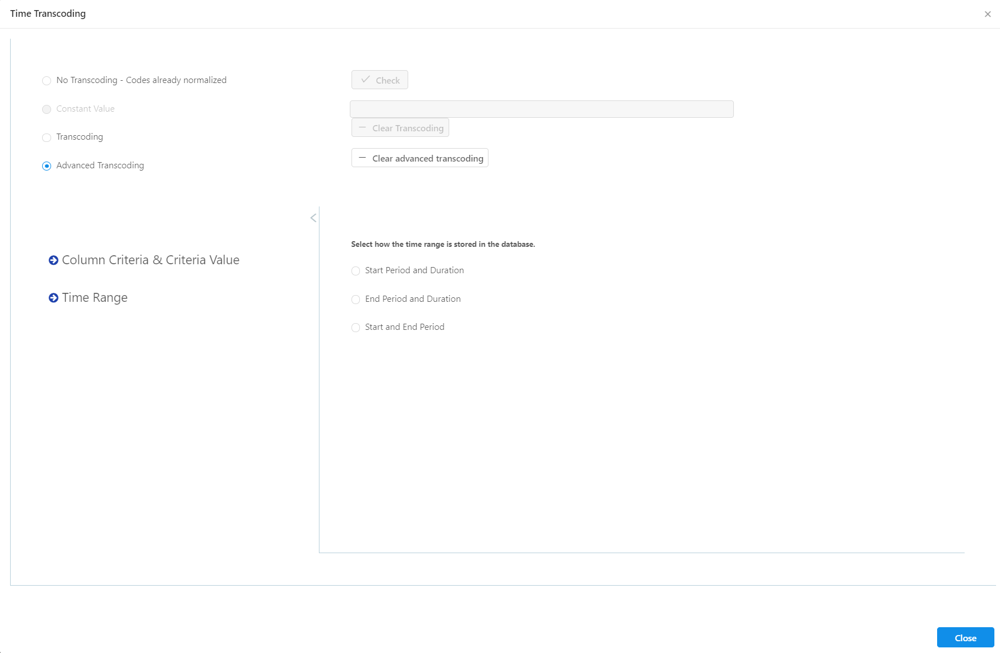
Select the 3rd radio option Start and End Period and a new selection opens.
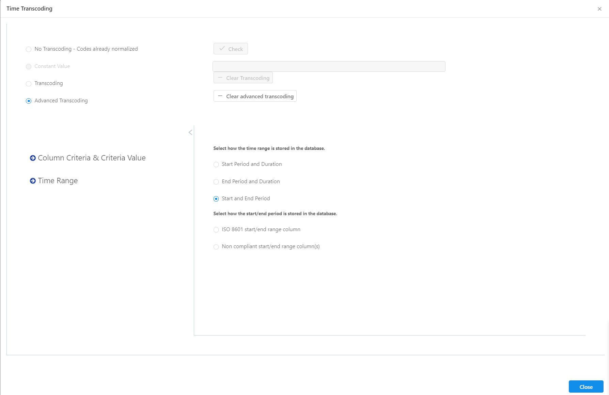
Select the 2nd option Non compliant start/end range column(s) and now two selections for start and end period are shown. Note the steps above are the only case that could lead to two in parallel (and independent between each other) selections. User can think of it as two separate columns.
Choose the appropriate radio buttons for start and end period. We select the radio buttons shown below (user is free to select any radio buttons):
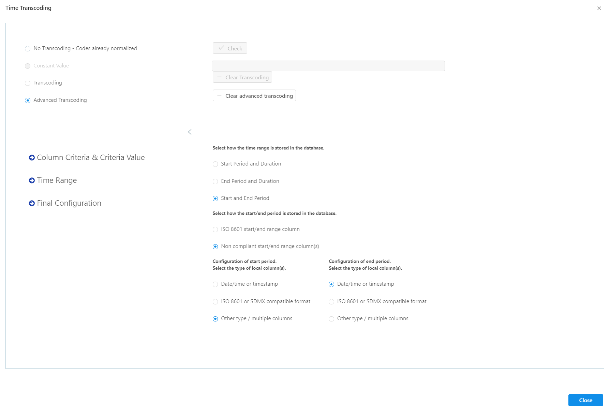
For taking the previous screenshot we backtracked by pressing Time Range tab on the left sidebar, since when user selects radio buttons for both columns, he/she will automatically navigate to tab named Final Configuration and the following screen will appear:
The left selection is the result of the previous (left column) choice, i.e. Other type/ multiple columns. Similarly for the right selection.
User can select any radio button from the left column and a value from the right dropdown. Note that save button will be enabled when both columns have selected values.
See the following two screenshots:
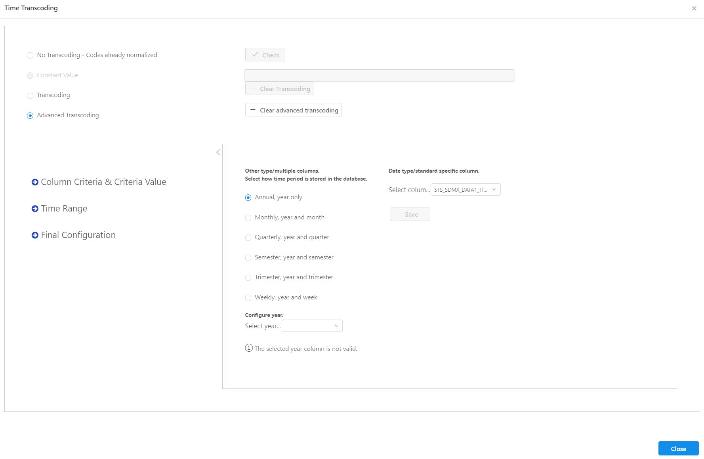
We select both columns and save button is now enabled:
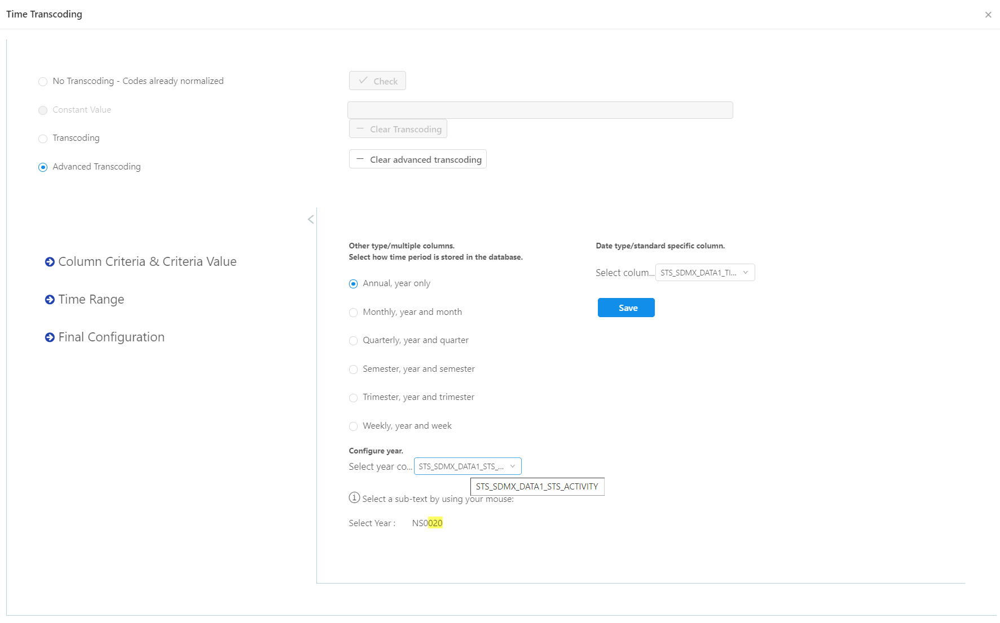
At this point the user is ready to save the advanced time transcoding by pressing save button.
The left hand side of the screen contains the "Import Mapping" and "Export Mapping" buttons.
Export Mapping opens a window in which the user can select which mapping set they wish to export. Then they can choose to export it as a file (JSON) or export to a database. Currently export to a database is not supported, so only the file option is available.
By clicking on "Apply" the file is downloaded. It contains details about the mapping set, its mappings and transcodings (if any). This file can later be imported to different or the same mapping store.
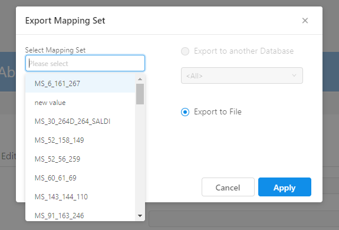
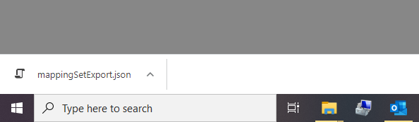
Import Mapping can be used to upload an already exported JSON file. The window will prompt the user to browse and find the JSON file. Then, by clicking on "Upload" the webapp begins uploading the file to the server.
Warning: You cannot import a mapping set if the name of the mapping set already exists in your mapping store because names are unique. You need to use a different mapping store or manually edit the JSON file before importing to have a different name.
Click on "Apply" to finish the process.
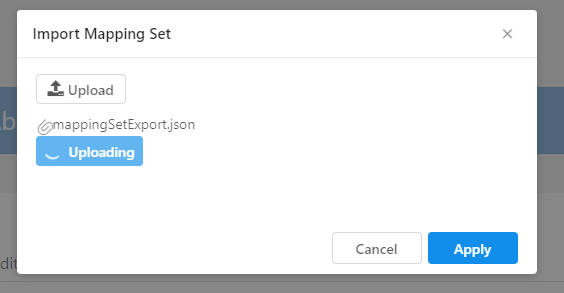